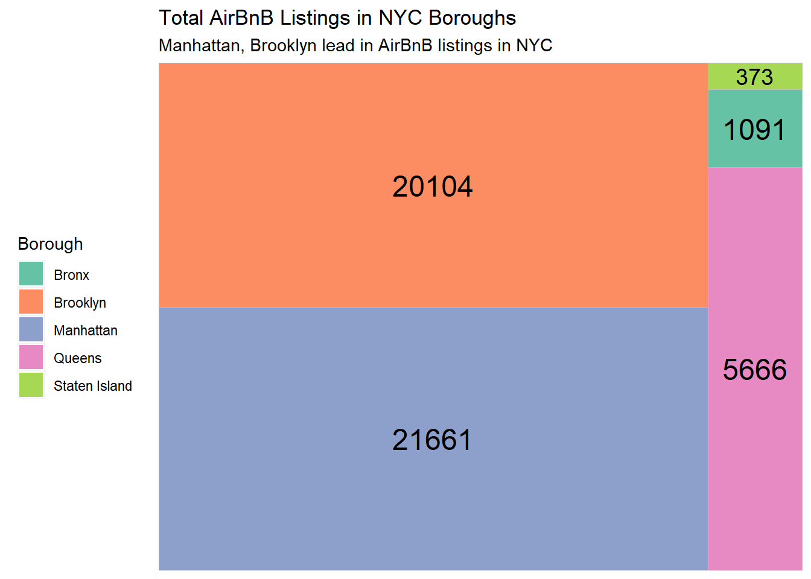

read in a data set, and describe the data set using both words and any supporting information (e.g., tables, etc) tidy data (as needed, including sanity checks) mutate variables as needed (including sanity checks) Recreate at least two graphs from previous exercises, but introduce at least one additional dimension that you omitted before using ggplot functionality (color, shape, line, facet, etc) The goal is not to create unneeded chart ink (Tufte), but to concisely capture variation in additional dimensions that were collapsed in your earlier 2 or 3 dimensional graphs. Explain why you choose the specific graph type If you haven’t tried in previous weeks, work this week to make your graphs “publication” ready with titles, captions, and pretty axis labels and other viewer-friendly features
Read in data
we imported the Airbnb dataset by reading in the corresponding CSV file.
The dataset contains information on nearly 49,000 Airbnb listings in the New York City area during 2019. Each listing record includes the name and ID of the listing, the host’s name and ID, the number of listings associated with that host, location data such as the neighborhood group (borough), specific neighborhood, latitude, and longitude, the type of room (private room, shared room, or entire home), the minimum stay requirement in nights, the price, and the year-round availability. Furthermore, each listing record also includes the number of reviews, reviews per month, and the most recent review for that particular listing.
Exploratory visualizations
Before proceeding with creating multi-dimensional visualizations, we opted to gain a deeper understanding of the data through one-dimensional visuals. Our focus was on exploring the distribution of Airbnb listings by borough. To accomplish this, we employed a treemap visualization to depict the relative proportions of Airbnb offerings for each borough.
Code
# Packagelibrary(treemapify)library(RColorBrewer)# Plotggplot(AB_NYC_2019 %>%count(neighbourhood_group),aes(fill = neighbourhood_group,area = n,label = n)) +geom_treemap() +geom_treemap_text(colour ="black",place ="centre") +labs(title ="Total AirBnB Listings in NYC Boroughs",subtitle ="Manhattan, Brooklyn lead in AirBnB listings in NYC", fill ="Borough") +theme(legend.position ="left") +scale_fill_brewer(palette ="Set2")

further our understanding of the data, we investigated the distribution of Airbnb room types. We employed a treemap visualization for this purpose, as it allows for the depiction of hierarchical data structures. As per the generated treemap, it is evident that the entire home/apartment listings constitute the largest proportion, followed by private room listings, and finally shared room listings.
By analyzing the treemap of Airbnb room types, it becomes apparent that shared room listings are underrepresented in the 2019 NYC dataset. The visualization highlights that the majority of the listings are entire home/apartment types, followed by private room listings.
Creating Visualizations with Multiple Dimensions.
Room Type and its Relationship with Price: A Visualization.
To investigate the relationship between AirBnb pricing and the number of listings by a host, as well as the variation in pricing across different room types, we generated a scatterplot visualization. The scatterplot allows for a clear representation of each listing type with its corresponding price, distinguished by color.
Code
ggplot(AB_NYC_2019, aes(x=calculated_host_listings_count, y=price)) +geom_point(aes(color=room_type)) +labs(title ="NYC AirBNB prices sky high even amongst humbler hosts",x ="Number of Listings From Host",y ="Price of AirBNB ($USD)", caption ="Data from InsideAirbnb.com",color ="Room Type") +scale_color_manual(values=c("navy", "deeppink", "green"))
To further examine the relationship between the number of listings and pricing, I can filter the scatterplot to include only hosts who have 50 or fewer AirBnB properties. This subset still shows a wide range of pricing across all room types, but I can see that Private Rooms have a wider range of prices than Entire Homes. There are also more Private Rooms available than Shared Rooms among these hosts with fewer listings.
Code
ggplot(AB_NYC_2019 %>%filter(calculated_host_listings_count <=50), aes(x=calculated_host_listings_count, y=price)) +geom_point(aes(color=room_type)) +labs(title ="Hosts with more properties offer lower-priced NYC AirBnBs",x ="Number of Listings From Host",y ="Price of AirBNB ($USD)", caption ="Data from InsideAirbnb.com",color ="Room Type") +scale_color_manual(values=c("navy", "deeppink", "green"))
Reviews by Boroughs
To determine the borough and room type that generates the most conversation on AirBnB, I will create a bar chart that first separates the data by borough and then divides the borough data into the three different room types.
Code
ggplot(AB_NYC_2019, aes(fill=room_type, x=neighbourhood_group, y=number_of_reviews)) +geom_bar(position="dodge", stat ="identity") +labs(title ="AirBnBs in Queens get the most reviews",x ="NYC Borough",y ="Number of Reviews",fill ="Room Type", caption ="Data from InsideAirbnb.com" )
This bar chart displays the distribution of reviews across the different room types and boroughs in the 2019 NYC AirBnB dataset. It shows that private rooms generally receive the most reviews, regardless of the borough. However, Brooklyn is the only borough where Entire Home-style AirBnBs receive slightly more reviews than private rooms. Among the boroughs, private rooms in Queens have the highest number of reviews, followed closely by private rooms in Manhattan. Conversely, shared rooms in Staten Island have the least number of reviews, which is expected given that Staten Island has the least number of AirBnB listings and shared rooms are the least common type of offering.
Source Code
---title: "Challenge 7"author: "Thrishul"desription: "Visualizing Multiple Dimensions"date: "04/18/2023"format: html: toc: true code-fold: true code-copy: true code-tools: truecategories: - challenge_6 - fed rates - debt---```{r}library(tidyverse)library(ggplot2)library(readr)library(dplyr)knitr::opts_chunk$set(echo =TRUE, warning=FALSE, message=FALSE)```# Challenge OverviewToday’s challenge is to:read in a data set, and describe the data set using both words and any supporting information (e.g., tables, etc)tidy data (as needed, including sanity checks)mutate variables as needed (including sanity checks)Recreate at least two graphs from previous exercises, but introduce at least one additional dimension that you omitted before using ggplot functionality (color, shape, line, facet, etc) The goal is not to create unneeded chart ink (Tufte), but to concisely capture variation in additional dimensions that were collapsed in your earlier 2 or 3 dimensional graphs.Explain why you choose the specific graph typeIf you haven’t tried in previous weeks, work this week to make your graphs “publication” ready with titles, captions, and pretty axis labels and other viewer-friendly features## Read in datawe imported the Airbnb dataset by reading in the corresponding CSV file.air_bnb ⭐⭐⭐```{r}AB_NYC_2019 <-read_csv("_data/AB_NYC_2019.csv", show_col_types =FALSE)```## Briefly describe the data```{r}dim(AB_NYC_2019)head(AB_NYC_2019)``````{r}colnames(AB_NYC_2019)``````{r}unique(AB_NYC_2019$neighbourhood_group)``````{r}unique(AB_NYC_2019$room_type)```The dataset contains information on nearly 49,000 Airbnb listings in the New York City area during 2019. Each listing record includes the name and ID of the listing, the host's name and ID, the number of listings associated with that host, location data such as the neighborhood group (borough), specific neighborhood, latitude, and longitude, the type of room (private room, shared room, or entire home), the minimum stay requirement in nights, the price, and the year-round availability. Furthermore, each listing record also includes the number of reviews, reviews per month, and the most recent review for that particular listing.# Exploratory visualizationsBefore proceeding with creating multi-dimensional visualizations, we opted to gain a deeper understanding of the data through one-dimensional visuals. Our focus was on exploring the distribution of Airbnb listings by borough. To accomplish this, we employed a treemap visualization to depict the relative proportions of Airbnb offerings for each borough.```{r}# Packagelibrary(treemapify)library(RColorBrewer)# Plotggplot(AB_NYC_2019 %>%count(neighbourhood_group),aes(fill = neighbourhood_group,area = n,label = n)) +geom_treemap() +geom_treemap_text(colour ="black",place ="centre") +labs(title ="Total AirBnB Listings in NYC Boroughs",subtitle ="Manhattan, Brooklyn lead in AirBnB listings in NYC", fill ="Borough") +theme(legend.position ="left") +scale_fill_brewer(palette ="Set2")```further our understanding of the data, we investigated the distribution of Airbnb room types. We employed a treemap visualization for this purpose, as it allows for the depiction of hierarchical data structures. As per the generated treemap, it is evident that the entire home/apartment listings constitute the largest proportion, followed by private room listings, and finally shared room listings.```{r}ggplot(AB_NYC_2019 %>%count(room_type),aes(fill = room_type,area = n,label = n)) +geom_treemap() +geom_treemap_text(colour ="white",place ="centre") +labs(title ="Total NYC AirBnB Listings by Type",subtitle ="Entire-Home Listings & private rooms rule NYC AirBnBs", fill ="Room Type") +theme(legend.position ="left") +scale_fill_brewer(palette ="Dark2")```By analyzing the treemap of Airbnb room types, it becomes apparent that shared room listings are underrepresented in the 2019 NYC dataset. The visualization highlights that the majority of the listings are entire home/apartment types, followed by private room listings.# Creating Visualizations with Multiple Dimensions.## Room Type and its Relationship with Price: A Visualization.To investigate the relationship between AirBnb pricing and the number of listings by a host, as well as the variation in pricing across different room types, we generated a scatterplot visualization. The scatterplot allows for a clear representation of each listing type with its corresponding price, distinguished by color.```{r}ggplot(AB_NYC_2019, aes(x=calculated_host_listings_count, y=price)) +geom_point(aes(color=room_type)) +labs(title ="NYC AirBNB prices sky high even amongst humbler hosts",x ="Number of Listings From Host",y ="Price of AirBNB ($USD)", caption ="Data from InsideAirbnb.com",color ="Room Type") +scale_color_manual(values=c("navy", "deeppink", "green")) ```To further examine the relationship between the number of listings and pricing, I can filter the scatterplot to include only hosts who have 50 or fewer AirBnB properties. This subset still shows a wide range of pricing across all room types, but I can see that Private Rooms have a wider range of prices than Entire Homes. There are also more Private Rooms available than Shared Rooms among these hosts with fewer listings.```{r}ggplot(AB_NYC_2019 %>%filter(calculated_host_listings_count <=50), aes(x=calculated_host_listings_count, y=price)) +geom_point(aes(color=room_type)) +labs(title ="Hosts with more properties offer lower-priced NYC AirBnBs",x ="Number of Listings From Host",y ="Price of AirBNB ($USD)", caption ="Data from InsideAirbnb.com",color ="Room Type") +scale_color_manual(values=c("navy", "deeppink", "green")) ```## Reviews by BoroughsTo determine the borough and room type that generates the most conversation on AirBnB, I will create a bar chart that first separates the data by borough and then divides the borough data into the three different room types.```{r}ggplot(AB_NYC_2019, aes(fill=room_type, x=neighbourhood_group, y=number_of_reviews)) +geom_bar(position="dodge", stat ="identity") +labs(title ="AirBnBs in Queens get the most reviews",x ="NYC Borough",y ="Number of Reviews",fill ="Room Type", caption ="Data from InsideAirbnb.com" ) ```This bar chart displays the distribution of reviews across the different room types and boroughs in the 2019 NYC AirBnB dataset. It shows that private rooms generally receive the most reviews, regardless of the borough. However, Brooklyn is the only borough where Entire Home-style AirBnBs receive slightly more reviews than private rooms. Among the boroughs, private rooms in Queens have the highest number of reviews, followed closely by private rooms in Manhattan. Conversely, shared rooms in Staten Island have the least number of reviews, which is expected given that Staten Island has the least number of AirBnB listings and shared rooms are the least common type of offering.